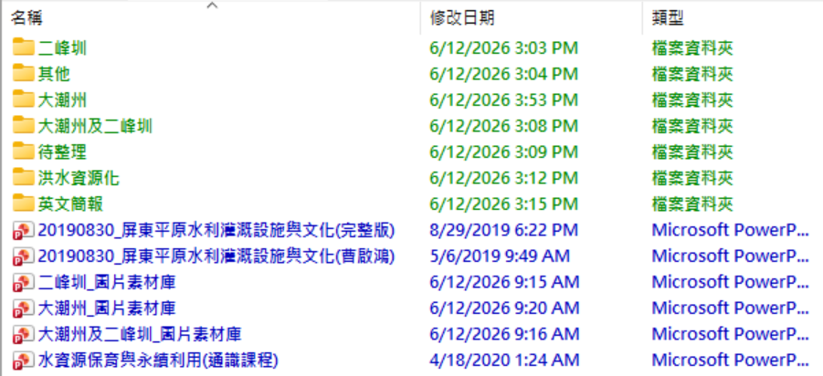
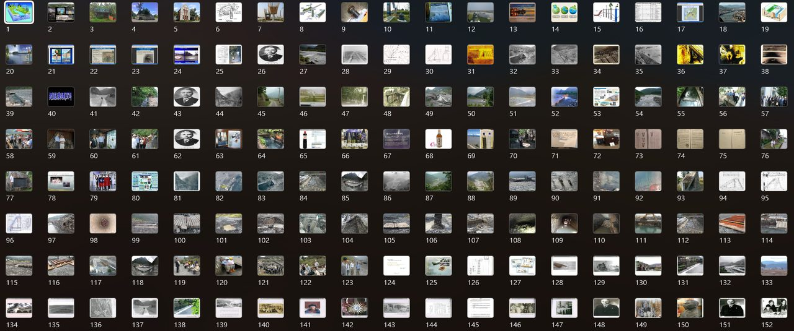

AI 協作案例
用 AI 整理 10 年份的工程簡報資料夾
把 200+ 個命名混亂、作者與對象各異的工程 PPT，透過 Claude + Python 自動命名、去重、分類，再抽出所有圖片建成三個可重複利用的素材庫。
適合誰看：有大量簡報或文件需整理的政府機關、研究單位、工程師，或任何被「找不到對的版本」困擾的人。
1
痛點說明
大潮州人工湖與二峰圳導流工程是屏東縣推動多年的水資源工程，累積了 10 年的對外說明簡報。這些簡報由不同的人製作，目的是對不同的機關或民眾做說明，所以作者、說明對象和年份都很混亂。
- 200+ 個 PPT/PPTX 全部堆在根目錄，沒有子資料夾結構
- 命名格式三種混用：ROC 年（如「107年8月」）、西元年、完全無日期
- 「簡報1.pptx」「最終版」「Final2」「（曹啟鴻）」同時存在，無法判斷版本
- 不同版本的簡報大量引用相同圖片——因為這就是前後版本參照的結果，導致同一張圖在不同檔案裡出現幾十次
- 靠人工逐一確認，一整理就是幾天
2
逐步研討
Phase 01 · 命名 & 去重
- 用 python-pptx 讀取每份簡報第一張投影片的標題與副標題框文字
- 自動偵測民國年格式，套用 ROC + 1911 = 西元年轉換，統一輸出 YYYYMMDD_主題.pptx
- 計算每個檔案的 MD5 hash；完全相同者移到
_重複檔案/子資料夾，不刪除
調整前
正規表達式直接抓「年月日」→ 大量民國年格式的檔案命名失敗，顯示「未知日期」
調整後
加入民國年偵測規則（辨識兩位數「年」格式）→ 122 個檔案全部正確重命名
Phase 02 · 分類整理
使用者 prompt
「我有一個已經稍微整理過的版本，先讓你讀懂我的分類邏輯，再幫我把剩下的按照一樣的規則整理。」
Claude 先讀使用者整理好的版本，識別出以「簡報對象」為主軸的分類邏輯，而非主動套用年份或主題分層
Claude 建議
「是否要增加年份子資料夾，會更系統化？」
使用者明確拒絕 → Claude 尊重，不強加，直接以現有資料夾結構為準繩執行批次移動
- 分類主軸確認：二峰圳/ · 大潮州/ · 大潮州及二峰圳/ · 英文簡報/ · 其他/
- 照片、影片各自放到對應主題的子資料夾
- 用 shutil.move() 批次移動 137 個檔案（Windows 掛載目錄不支援 os.remove()，全程不做刪除）
Phase 03 · 圖片素材庫 ★ 最有創意的轉化
原始需求
「幫我比對不同版本簡報的文字差異。」
Claude 建議改向：把所有簡報的圖片全部抽出，建成可重複利用的素材庫 → 使用者採用
- python-pptx 讀取每張投影片的 shape.image.blob（圖片的原始二進位資料）
- MD5 去除完全相同的圖片；pHash（感知哈希，閾值 ≤8）去除視覺相似的近重複圖片
- PIL / Pillow 壓縮到最大 1280×960，JPEG 品質 82%，過濾掉小於 200×150 的圖示
- 組裝成 PPTX：每張圖一頁，附來源路徑與投影片編號標籤
- 舊版 .ppt（PPT97）無法用 python-pptx 直接讀取 → 先用 LibreOffice headless 逐一轉成 .pptx，再抽圖
python-pptx
MD5 + pHash
PIL / Pillow
LibreOffice headless
兩段式執行
Phase 04 · 新素材更新
使用者 prompt
「我放了一些新資料進去，幫我比對一下，不重複的就照邏輯整理。」
建立 (size, partial-MD5) 快速索引（取每個檔案前 4KB），掃描 待整理/ 資料夾並自動三類分流
- 文件（PPT/PPTX/PDF）→ 讀第一頁重命名；照片（JPG）→ 保留 IMG_XXXX 原名；影片 → 移到各主題影片/
- MP3 背景音樂：使用者明確指示全數捨棄
- 11 個已存在的跳過，20 組內部重複只保留一份，335 個新檔案完成分類
踩過的坑
-
1Bash 45 秒逾時：圖片素材庫腳本執行超時，PPTX 在寫入途中被截斷損毀。解法：拆成 Step 1（抽圖→存磁碟）和 Step 2（組 PPTX）兩段獨立執行，中間用 pickle 保存進度。
-
2舊版 .ppt 無法讀取：PPT97 二進位格式讓 python-pptx 直接拋出 "Package not found"。解法：LibreOffice headless 轉檔，每次轉一個、立刻處理、立刻刪除。
-
3EPERM 無法刪除：Windows 掛載目錄上 os.remove() 噴 Permission Error。解法：全程改用 shutil.move()，搬移而非刪除。
-
4/tmp 磁碟爆滿：18 個轉換後的 PPTX 同時留在 /tmp，累積 1.2 GB 導致沙盒當機。解法：每轉一個 .ppt → 立刻抽完圖 → 立刻刪掉，不累積。
關鍵決策點
1
先讀懂使用者的邏輯，不套 AI 模板
AI 提議用「年份子資料夾」做第二層分類，被使用者拒絕後立刻改弦易轍，以使用者現有的資料夾結構為準繩。教訓：AI 輔助整理的核心是「先看懂人的邏輯再執行」，不是強推 AI 認為更好的結構。
2
把「版本比對」需求轉化成「圖片素材庫」
原始需求是比對不同版本的文字差異——但抽出、去重再整理成素材庫，對這個工程團隊的實際使用場景更有價值。這個轉化來自 Claude 主動提問「你真正想解決的問題是什麼？」
3
partial-MD5 快速去重索引
全量 MD5 對大型 PPTX 速度極慢。改成只取每個檔案前 4KB 做 partial-MD5 + 比對大小，快速過濾掉九成非重複，只對疑似重複的才做完整比對——大幅縮短掃描時間。
3
成果展示


122
個檔案完成重命名
26
個重複檔案隔離
137
個檔案自動分類
335
個新素材整理完成
1,267
張獨特圖片（三庫合計）
以下三個素材庫為本機 .pptx 檔案，點擊可查看說明。
4
未來方向
本專案還能精進
- 素材庫目前無分類——可依圖片類型細分（工程照片、平面配置圖、學術圖表），單一素材庫幾百張圖，細分後查找效率會大幅提升
- 完成圖片素材庫更新（兩個大型 .ppt 尚未處理，改用逐一轉換策略避免 /tmp 爆滿）
- 加入文字內容比對，做更智能的版本差異分析
- 建立自動化排程：新簡報放進資料夾就自動命名分類
這套方法還能用在哪
- 學術論文管理：PDF 自動命名 + 圖表素材庫
- 工程竣工圖庫：圖面抽取、格式統一、去重
- 客戶提案管理：按客戶 / 年份 / 類型分類
- 照片整理：EXIF 日期重命名 + 視覺重複偵測
如果你也想試試看
不需要會寫程式，只需要把情境說清楚。
- 描述你的混亂：「我有 XXX 個 PPT，命名混亂，幫我整理」——越具體越好
- 說清楚命名規則：「第一頁有日期，格式是民國年月日，要轉成西元年」
- 先跑小批次確認：先試 10 個，確認 AI 理解你的邏輯，再全量執行
- 讓 AI 讀你的邏輯：自己先整理一個版本 → 讓 AI 看懂 → 再批次處理
- 說清楚哪些不要：重複的怎麼處理？舊版要不要留？不說清楚會出錯
- 善用素材庫概念：「幫我把所有 PPT 的圖片抽出來做一個素材庫」超實用